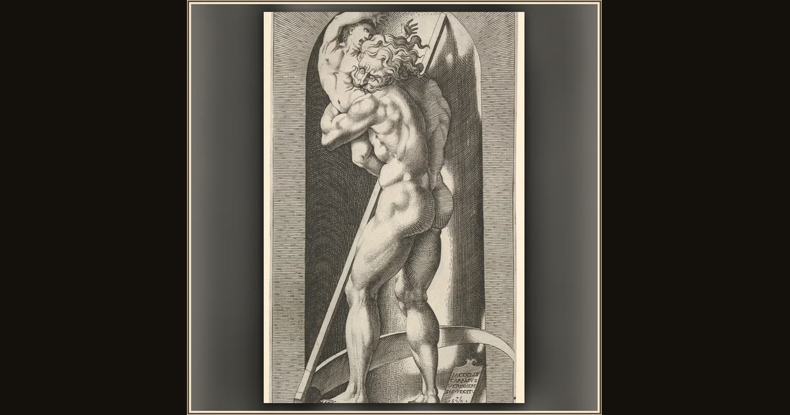

Plate 1: Saturn in a niche devouring his son, standing before a scythe, from "Mythological Gods and Goddesses"
Giovanni Jacopo Caraglio · 1526 · met
The engraving shows Saturn devouring his son in a niche, with a scythe at his feet; Socrates objects to stories about Cronus’ deeds (378a). Explore its place in Plato's Republic, Book II, section 105.